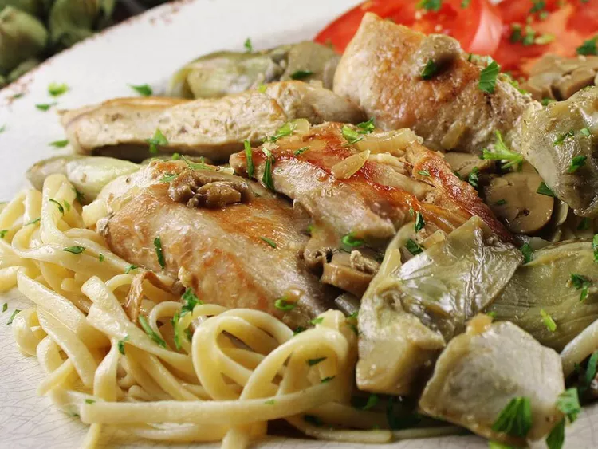

Chicken Pasta
Home

This is a romantic chicken with artichokes and mushrooms, which is very
easy, moist, flavorful, and aromatic!
Ingredients
- Skinless, Boneless chicken breast
- Salt and Pepper
- Olive Oil
- Marinated artichoke hearts
- Mushrooms
- White Wine
- Capers
Steps
- Season chicken with salt and pepper
- Heat oil and butter in skillet over medium heat
- Brown the chicken
- Place artichoke heart and mushrooms in skillet and sautee
- Return chicken to skillet and pour in wine
- Stir in capers and simmer